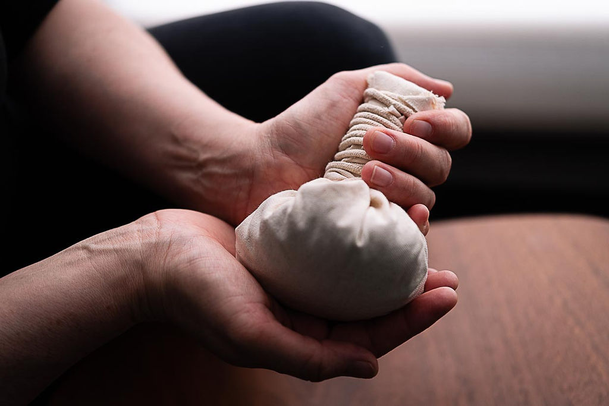
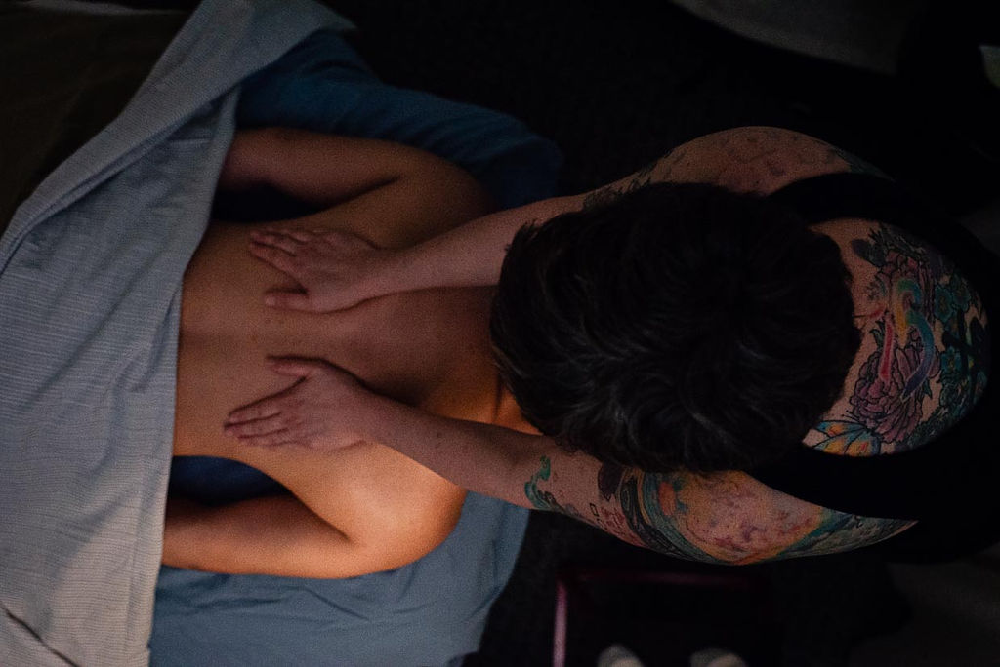
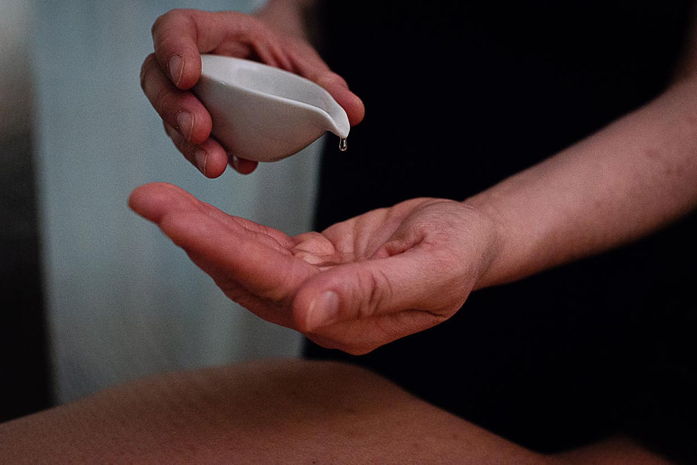
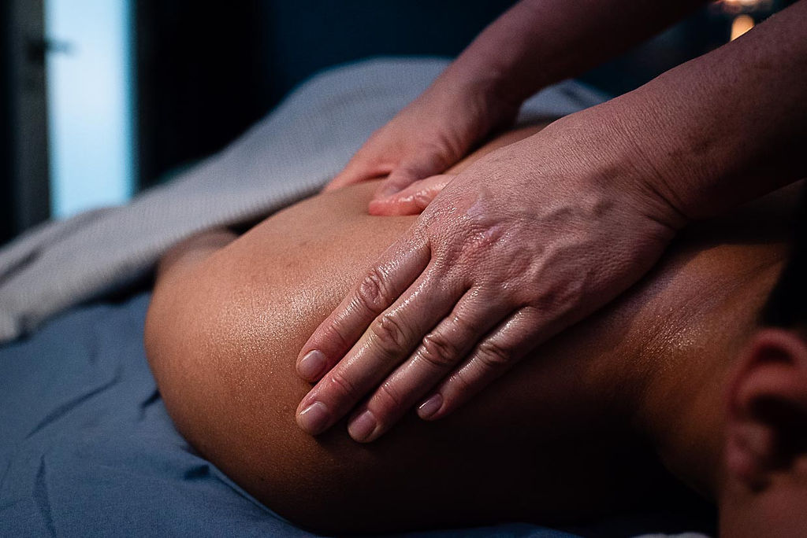

Thai Massage
Thai massage works the whole body to free up movement and circulation. Pressure is applied with hands, forearms, knees, and feet. In this session, you can expect to be moved to incorporate extending range of movement in your joints, compression, acupressure points, and stretching.
Session is performed on a cozy floor mat in stretchy clothes.
Custom herbal compresses available.


Custom Massage
Drawing on 15 years of experience using a variety of methods on the massage table to address pain, tension, stress and to facilitate ease and relaxation. Whether you have a particular physical issue you want addressed, seeking ease with stress or anxiety, or need support around sleep, we can tailor this massage to your unique needs.
Typical sessions incorporate Swedish, deep tissue, myofacial release, and acupressure techniques.
Prenatal Massage
Prenatal massage is a crucial aspect to perinatal wellbeing. Prenatal massage supports your body in many ways, from alleviating common aches and pains to supporting your muscles’ ability to release which helps your body to relax into each contraction when labor comes.
In prenatal massage, we avoid the typical prone position (belly down) and instead utilize side lying position and elevated supine position with many pillows to ensure you’re comfortable. These massages are tailored to all trimesters and come with education and coaching on positioning to assist in sleep and relaxation.


Postnatal Massage
Masssage after pregnancy or birth is customized to bring ease and comfort to your body. The postpartum body may have aches and pains associated with holding and feeding baby as well as any injuries or challenges that occurred while pregnant or during birth.
In postpartum massage, the goal is that you feel relaxed, to ease tension, bring warmth into the body, ease anxiety and stress, reduce swelling, improve sleep, and balance hormones.